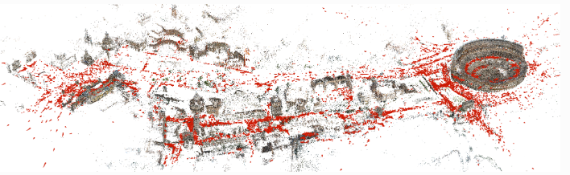
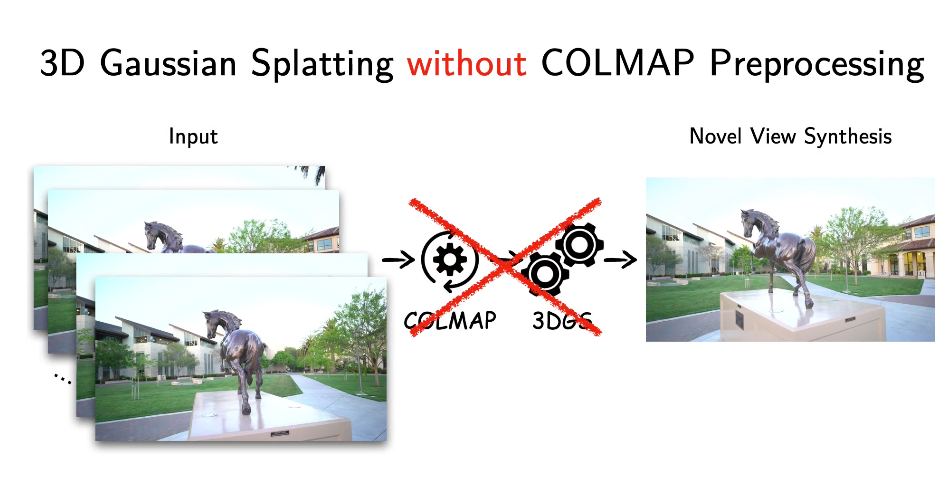
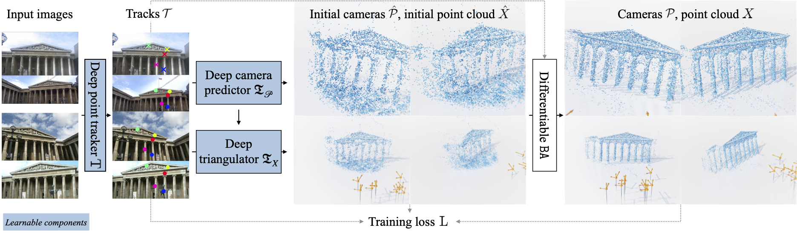
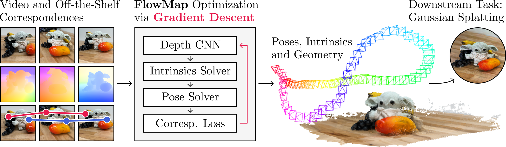

6 Preprocessing
6.1 COLMAP
COLMAP es un software de rpoposito general que spermite crear Structure-from-Motion (SfM) y Multi-View Stereo (MVS) con una interfaz gráfica y de línea de comandos. Ofrece una amplia gama de funciones para la reconstrucción de colecciones de imágenes ordenadas y desordenadas (Schönberger and Frahm 2016) (Schönberger et al. 2016). Para el caso de tecnologías Syntectic Views Novel es el software más utilizado para obtener las poses de la cámara que los modelos como NERF y Gaussian Splatting utilizan normalmente.

Referencias: Project COLMAP, Tutorial
6.2 COLMAP-Free 3D Gaussian Splatting
El artículo Fu et al. (2023) presenta un enfoque innovador llamado COLMAP-Free 3D Gaussian Splatting que permite la síntesis de vistas novedosas foto-realistas y la reconstrucción de escenas 3D sin necesidad de preprocesar poses de cámara con COLMAP. Este método mejora significativamente la estimación de poses de cámara y la síntesis de vistas bajo grandes cambios de movimiento al utilizar representaciones explícitas y la continuidad del video de entrada. El método presenta 3 puntos claves:
Síntesis de Vistas Nuevas: El método ajusta una curva Bezier a las poses de cámara estimadas, permitiendo la síntesis de imágenes desde puntos de vista de prueba.
Estimación de Poses de Cámara: Se visualizan las trayectorias estimadas contra las trayectorias de referencia para evaluar la precisión del método.
Reconstrucción de Escenas 3D desde Videos Sora La técnica se aplica a videos generados por Sora, un modelo generativo de texto a video, demostrando la capacidad de generar datos 3D infinitos a partir de pocas líneas de texto.

El enfoque COLMAP-Free 3D Gaussian Splatting permite la síntesis de vistas y la reconstrucción de escenas 3D sin la necesidad de preprocesamiento de poses de cámara, mostrando mejoras significativas en comparación con métodos anteriores. https://oasisyang.github.io/colmap-free-3dgs/
Referencias: Link del Proyecto, arXiv, Video, Slides, Code.
6.3 VGGSfM
Visual Geometry Grounded Deep Structure From Motion
VGGSfM es un pipeline de Structure from Motion (SfM) completamente diferenciable que permite la reconstrucción de poses de cámara y estructuras 3D a partir de imágenes 2D (Wang et al. 2023). Utiliza técnicas avanzadas de seguimiento de puntos y un ajuste de conjunto diferenciable, logrando resultados de última generación en conjuntos de datos como CO3D, IMC Phototourism y ETH3D. VGGSfM utiliza un proceso en tres etapas:

Extracción de Tracks 2D: Se extraen puntos de seguimiento 2D a partir de las imágenes de entrada utilizando una red neuronal profunda entrenada para esta tarea específica.
Reconstrucción de Cámaras: Utiliza los tracks 2D para reconstruir las poses de las cámaras. La reconstrucción de la cámara se realiza mediante una optimización iterativa que minimiza el error de reproyección entre los puntos 2D y sus correspondientes en el espacio 3D.
Optimización 3D Diferenciable: La reconstrucción 3D se optimiza utilizando una capa de ajuste de conjunto diferenciable que permite la retropropagación del error a través de todas las etapas del pipeline. Esto asegura una integración de extremo a extremo que mejora la precisión y robustez del modelo.
Cuando un método es “diferenciable”, significa que todas las operaciones y funciones utilizadas dentro del algoritmo permiten el cálculo de sus derivadas. Esto es crucial en el entrenamiento de modelos de aprendizaje profundo, donde se usa el descenso de gradiente para minimizar errores. En el contexto de VGGSfM, la diferenciabilidad permite que el error se retropropague a través del pipeline completo (desde la extracción de puntos hasta la optimización 3D), mejorando así la precisión de la reconstrucción de las poses de cámara y la estructura 3D mediante ajustes iterativos eficientes.
VGGSfM se ha aplicado a fotos en entornos no controlados, mostrando nubes de puntos densas y cámaras estimadas con alta precisión. Las visualizaciones cualitativas demuestran la capacidad del método para proporcionar reconstrucciones detalladas de cámaras y nubes de puntos en varios conjuntos de datos. En comparación con otros métodos, VGGSfM ha mostrado mejoras significativas en términos de precisión y consistencia, superando incluso a métodos tradicionales como COLMAP en algunos casos.
VGGSfM es un enfoque innovador en SfM, completamente diferenciable y capaz de reconstruir estructuras 3D y poses de cámara con alta precisión. Su integración de extremo a extremo y la utilización de técnicas avanzadas de seguimiento y optimización lo convierten en una herramienta poderosa para la reconstrucción 3D a partir de imágenes 2D, demostrando resultados superiores en múltiples conjuntos de datos.
Referencias: Link del Proyecto, Paper, Code, Demo
6.4 Flowmap
El artículo Smith et al. (2024) presenta FLowmap, un método auto-supervisado y diferenciable de SfM (Structure from Motion) que logra precisión a nivel COLMAP para escenas de 360°. Utiliza un objetivo de mínimos cuadrados para comparar el flujo óptico inducido por la profundidad, intrínsecos y poses contra correspondencias obtenidas mediante flujo óptico y seguimiento de puntos.

FlowMap permite la síntesis de vistas novedosas foto-realistas y facilita la reconstrucción 3D a través de Splatting Gaussiano. El documento presenta 3 puntos claves:
Optimización y Parámetros de Cámara: FlowMap emplea el descenso de gradiente para optimizar poses de cámara, intrínsecos y profundidad por cada video.
Aplicaciones: El método permite la creación de nubes de puntos densas y alineadas, y se puede utilizar para entrenar escenas de Splatting Gaussiano 3D de alta calidad.
Comparaciones y Resultados: FlowMap supera a métodos previos basados en descenso de gradiente y se compara favorablemente con COLMAP en la tarea de síntesis de vistas novedosas de 360°.
FlowMap es una solución innovadora para la estimación precisa de parámetros de cámara y reconstrucción 3D, demostrando una eficacia comparable a COLMAP en la síntesis de vistas de 360°. Su método diferenciable y auto-supervisado abre nuevas posibilidades para el entrenamiento de redes neuronales en estimación de parámetros de cámara y reconstrucción 3D.
Referencias: Link del Proyecto, Paper, Code, Datasets and Initialization